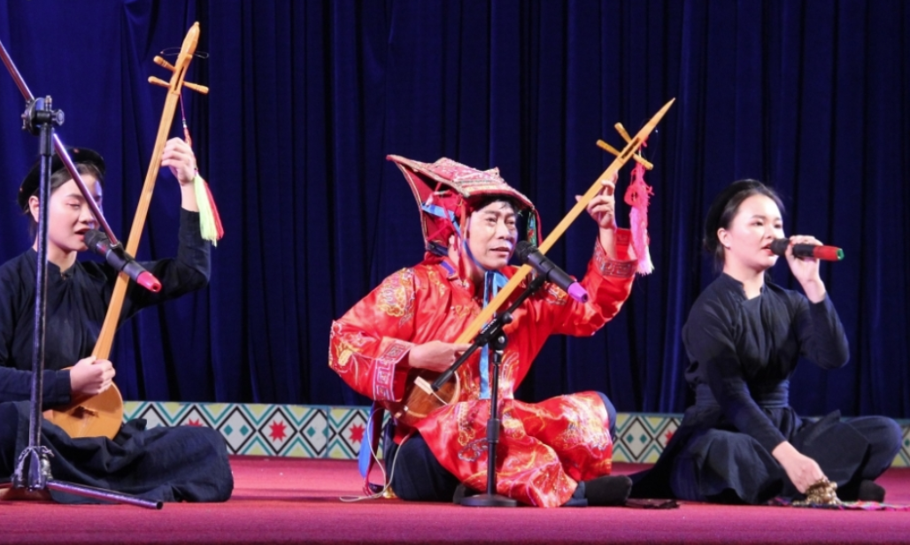
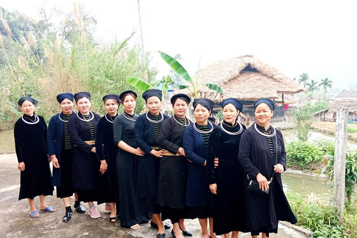
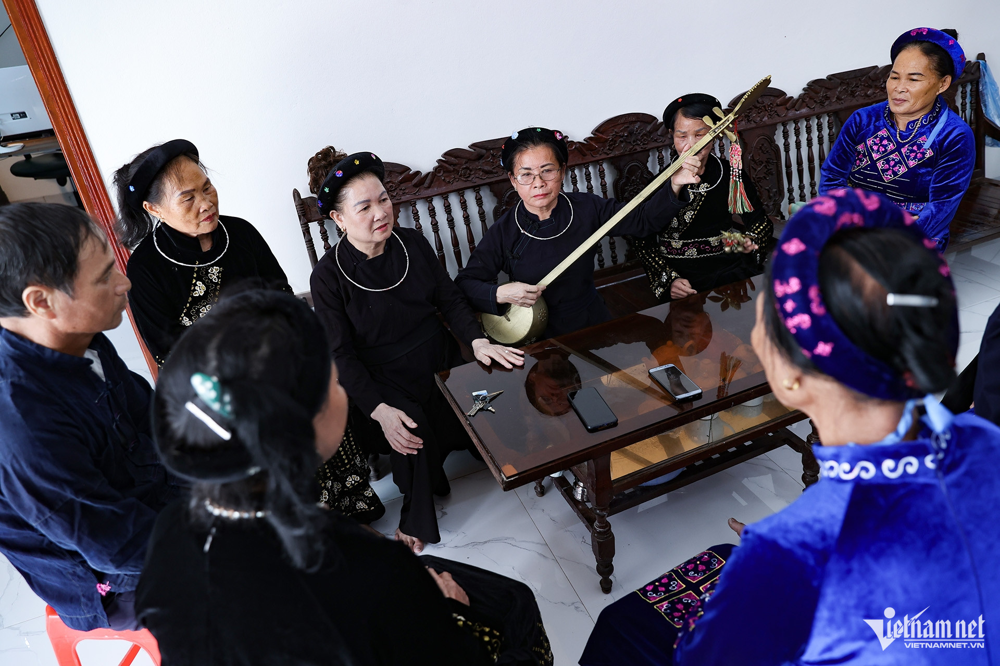
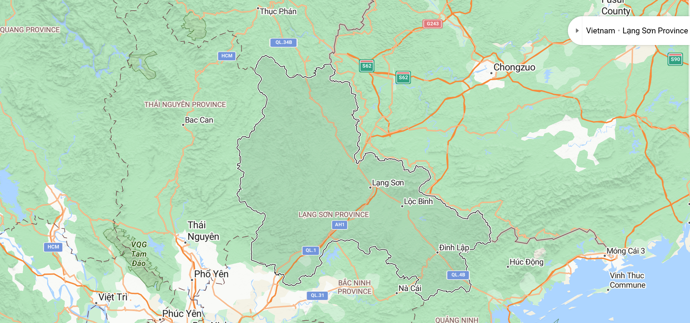
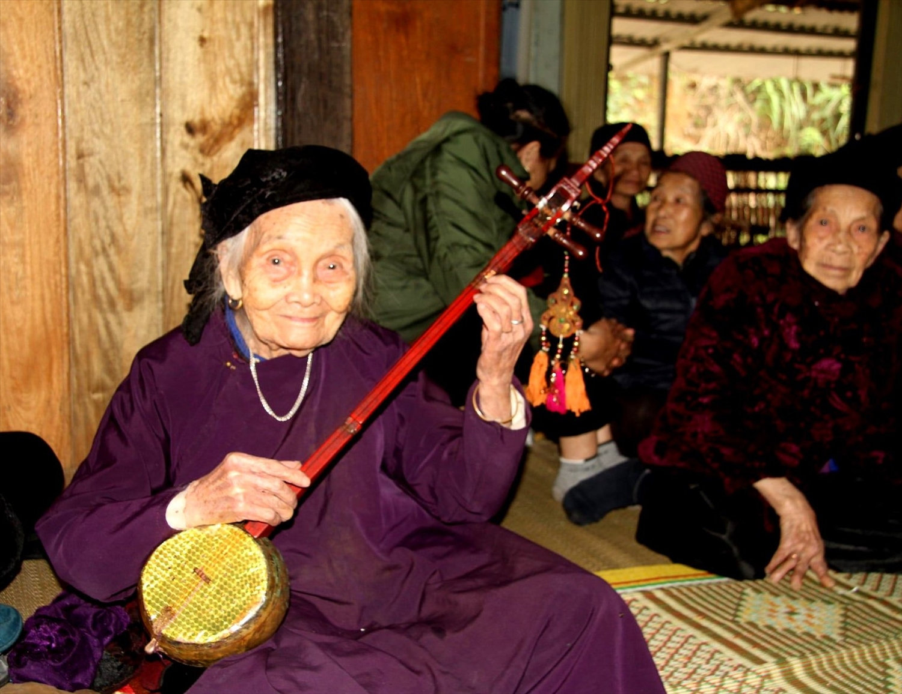
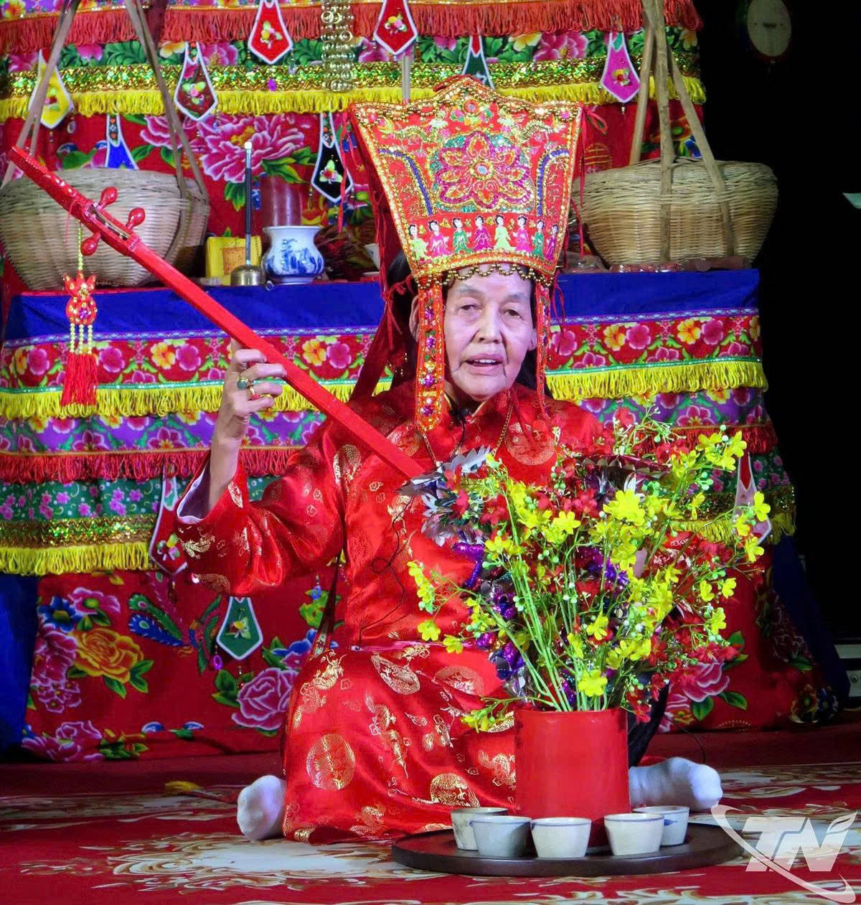
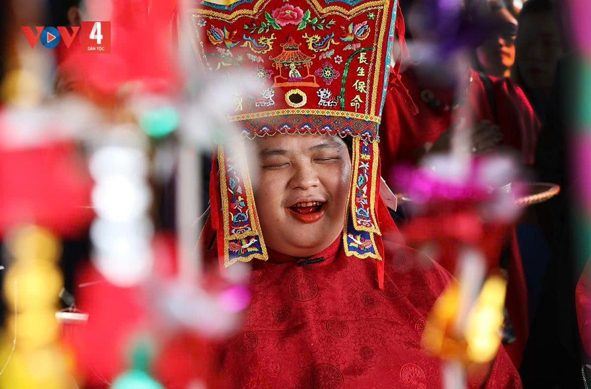

Tổng quan di sản
Bạn đã biết về Then?
"Hát Then – Đàn Tính là loại hình diễn xướng dân gian đặc sắc của đồng bào Tày, Nùng tỉnh Lạng Sơn. Đây là sự kết hợp nghệ thuật hài hòa giữa âm điệu Đàn Tính, nhịp xóc, điệu múa truyền thống và thơ ca dân gian, phản ánh nét đẹp tâm hồn, tình yêu thiên nhiên và đời sống văn hóa phong phú của người dân vùng biên cương."
Tìm hiểu chi tiết di sản →
Những thanh âm của Then
Xem thư viện →
Tri thức Folklore & Nghệ thuật trình diễn
Nghệ thuật & Nhạc cụ Di sản

Nhạc cụ đặc trưng
Đàn Tính & Chùm Nhạc Xóc
Bầu đàn làm bằng quả bầu khô gia công tỉ mỉ, cần đàn gỗ xoan/đáy nhẵn mịn, kết hợp chùm nhạc xóc đồng tạo nên nhịp điệu rộn ràng, đặc trưng của nhạc cụ Tày - Nùng.
Chi tiết →

Trang phục truyền thống
Mũ Then & Áo Dài Chàm
Sự kết hợp tinh tế giữa bộ áo dài chàm 5 thân may bằng vải tự dệt cài cúc nách, cùng chiếc mũ Then thêu hoa văn dân tộc và dải dây màu sắc rực rỡ.
Chi tiết →

Văn hóa cộng đồng
Giao lưu Câu lạc bộ Hát Then
Sức sống lan tỏa từ 65 câu lạc bộ Hát Then - Đàn Tính khắp 11 huyện thị Lạng Sơn. Nơi các nghệ nhân Tày - Nùng cùng hội tụ, trình diễn làn điệu dân ca và trao truyền di sản cho thế hệ tiếp nối.
Chi tiết →

Âm nhạc & Thơ ca
Làn điệu & Thơ ca Dân gian
Hệ thống làn điệu phong phú như Pây Tàng, Tàng Bốc cùng những bài thơ tự sự giàu chất trữ tình, ca ngợi tình yêu thiên nhiên, con người và kinh nghiệm sản xuất.
Chi tiết →
Địa bàn văn hóa & Hiện trạng di sản
Then & Xứ Lạng
11/11
Huyện & Thành phố có di sản Then
375
Nghệ nhân dân gian Tày - Nùng
65
Câu lạc bộ Hát Then - Đàn Tính
1.400+
Thành viên tham gia sinh hoạt

Chủ thể văn hóa Tày & Nùng
Người giữ lửa Di sản

Nghệ nhân ưu tú
Nghệ nhân: Mỗ Thị Kịt
Dân tộc Tày • Huyện Bình Gia, Lạng Sơn
"Tiếng Đàn Tính và làn điệu Then là hồn cốt của bản làng, cần được lưu giữ và truyền dạy lại cho thế hệ trẻ."
Xem hồ sơ nghệ nhân →

Nghệ nhân ưu tú
Nghệ nhân: Nông Thị Lìm
Dân tộc Tày • Huyện Cao Lộc, Lạng Sơn
"Mỗi bài Then cổ là một kho tàng thơ ca dân gian vô giá, ghi lại tri thức sản xuất và tình yêu thiên nhiên Xứ Lạng."
Xem hồ sơ nghệ nhân →

Thế hệ kế thừa
Nghệ nhân: Nguyễn Văn Thọ
Dân tộc Tày • CLB Hát Then Tràng Định
"Tích cực đưa Hát Then - Đàn Tính vào các buổi sinh hoạt thanh thiếu niên để người trẻ thêm yêu di sản quê hương."
Xem hồ sơ nghệ nhân →